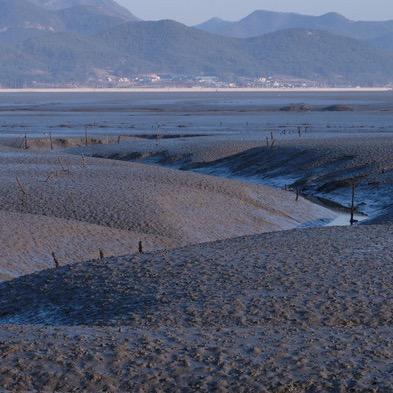
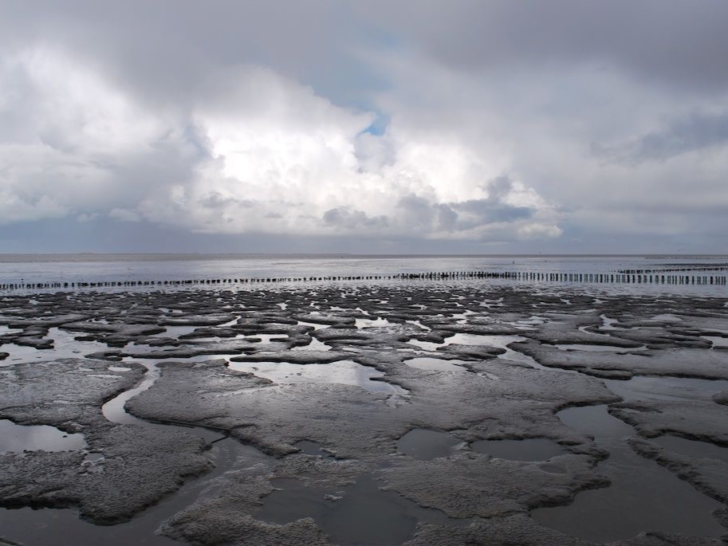
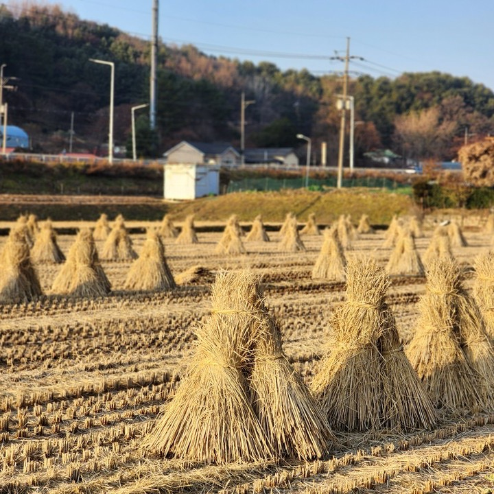
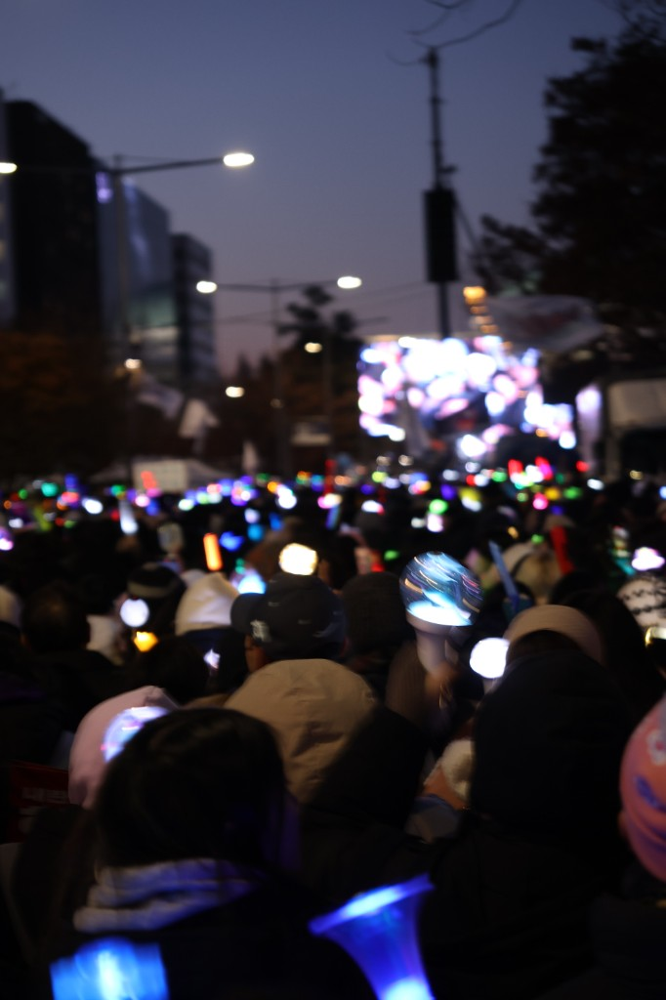
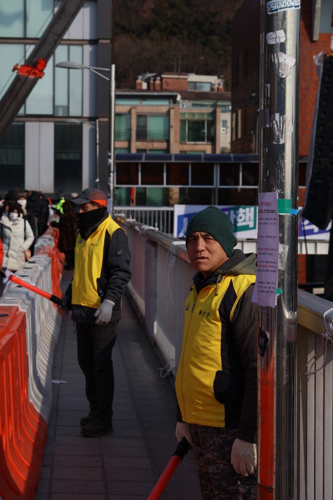

2022 · The Catch
I joined the university crew knowing nothing but how to fall in.
Portfolio
Environmental advocate · Photojournalist · Rower
I am a storyteller who works at the intersection of ecology, journalism and sport.
Born and raised in Seoul, I have spent the last several years documenting how communities respond to environmental change — from riverside clean-ups to climate policy forums. My camera goes where my convictions go, and the discipline I learned on the water keeps both of them steady.
This page collects the three currents of my life: K-Environmentalism, photojournalism, and rowing. Scroll slowly — like a long, heavy stroke — and drag whatever asks to be dragged.
Activities
Korea's grassroots environmental movement is young, loud and deeply local. I organise and document articles that tackle global climate anxiety into neighbourhood action.




Frames from the field. Drag the cards to spin the carousel — or swipe on your phone.



Four years of early mornings on the Han River. Drag the boat downstream to row through the story.
I joined the university crew knowing nothing but how to fall in.
Five a.m. water, eight oars, one sound. I learned what patience weighs.
First medal at the national university regatta — bow seat, photo finish.
An injury season. I coxed instead, and learned to lead from the stern.
Captain of the crew. The river is the same; the rower is not.
← drag the boat →
For assignments, collaborations, or a seat in the boat — write to me, or take the résumé with you.
Download Résumé